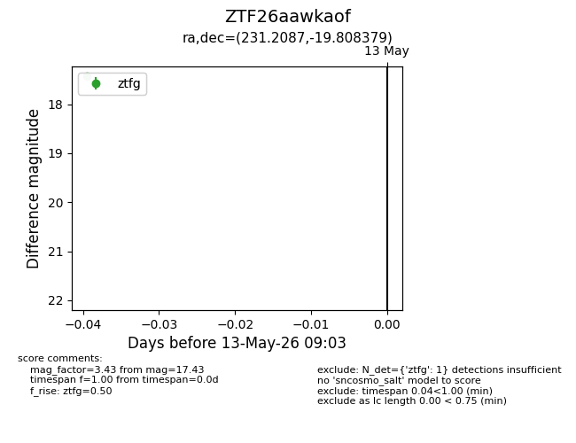
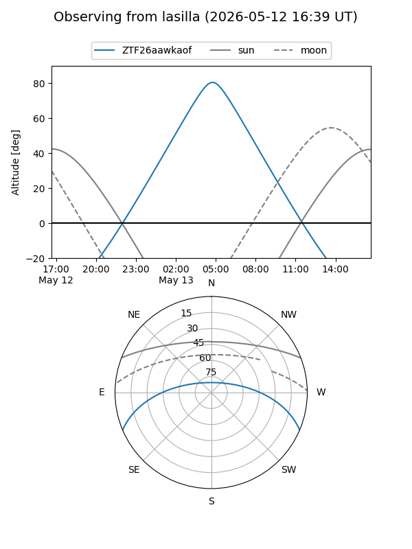
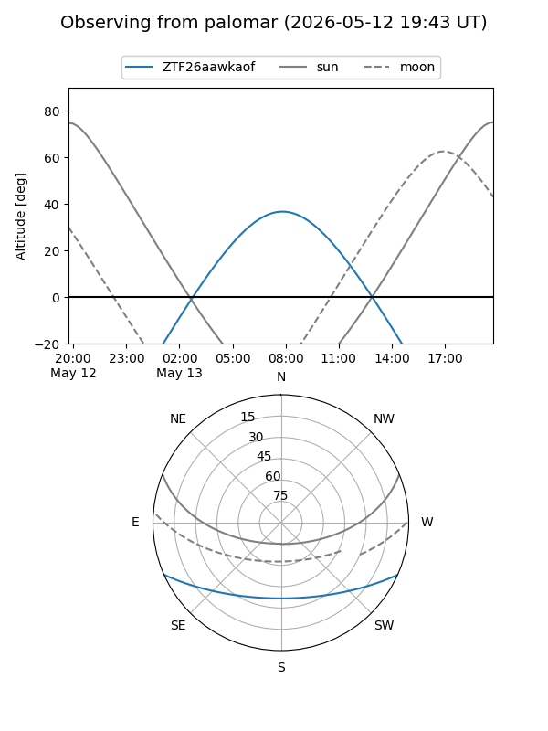

ZTF26aawkaof
Target ZTF26aawkaof at 2026-05-13 09:05
Aliases and brokers:
FINK: link
Lasair: link
ALeRCE: link
alt names
ZTF26aawkaof (ztf,fink_ztf)
Coordinates:
equatorial (ra, dec) = 231.2087,-19.80838
equatorial (HMS+DMS) = 15:24:50.09,-19:48:30.16
galactic (l, b) = (345.3873,+30.14221)
Flags:
Photometry:
last ztfg=17.43
1 ztfg detections
Lightcurve

Visibility


Additional plots